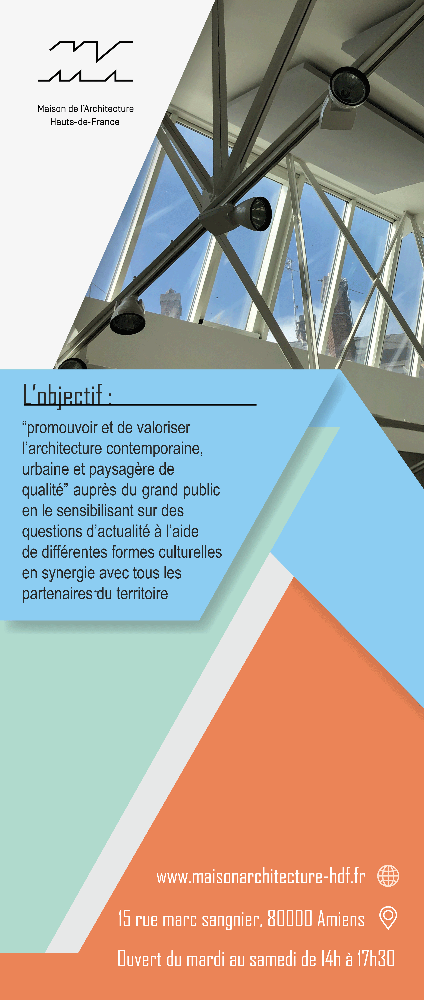
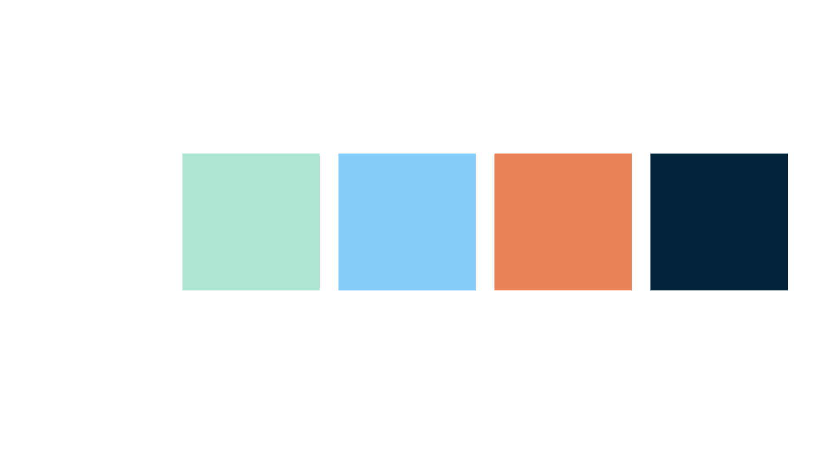

Kakémonos — Maison de l'Architecture HDF
Réalisation de deux kakémonos destinés à une utilisation lors d'un salon associatif, afin d'assurer une visibilité claire et impactante du stand. Travail sur la cohérence graphique avec l'identité de l'association et optimisation du format pour l'impression grand format (85 × 200 cm). L'objectif est de transmettre efficacement les informations essentielles.
Description des kakémonos
Le premier kakémono présente l'essentiel : l'objectif de l'association en une phrase, ses coordonnées, ainsi qu'un QR code menant vers un Linktree.
Le second kakémono présente les missions du centre culturel, organisées en quatre grandes thématiques : expositions, conférences et rencontres, ateliers pédagogiques et visites de chantiers.
Animations


Référence charte graphique

Fichiers pour impression